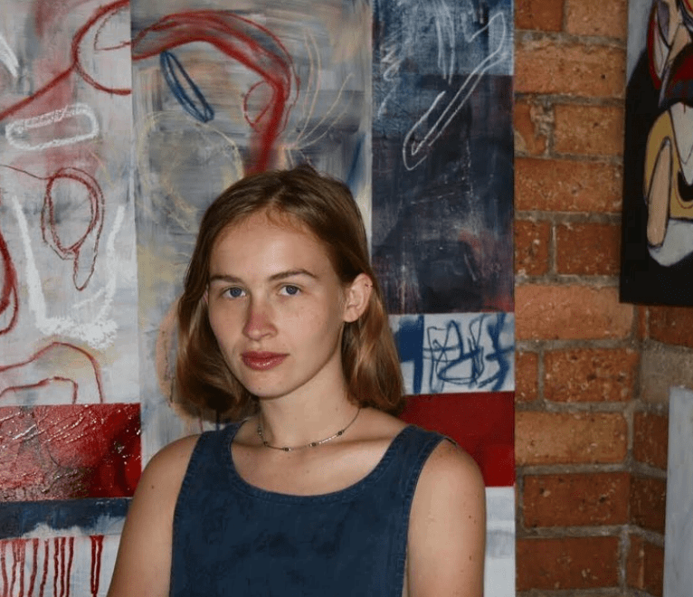

Mollie Wilson is a Melbourne based abstract painter who focuses on the human body, in distorted, yet recognisable forms. Familiar anatomical structures, in the process of movement, are used as the basis for abstraction. Mollie is particularly interested in the agitated, primal movements found in dancing and fighting. Mollie interrogates physical appearance to uncover an underlying and unconscious presence, and through this interrogation, retrieves appearance back to its physicality. Mollie's painting process, much like the human experience, begins and ends with the physical body.
